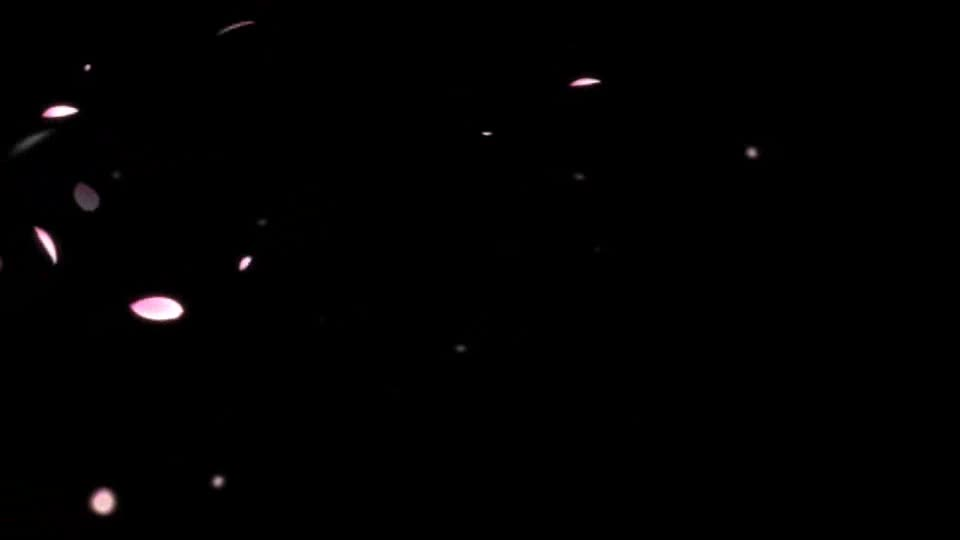

This scene is not unlocked yet in your progress
Slumber ~Leaving the Nest~


"Mm... Shigatsu Youka had been deceiving you all along...?"
"............"
"Dad! Don't you dare play the victim!? Look at the result!? We were in real danger, and so was Motoki-cho!"
"............"
"Dad! Don't you dare play the victim!? Look at the result!? We were in real danger, and so was Motoki-cho!"

"Chiga-nee..."
"And what about the people who've died until now!? They died because of your selfishness, didn't they!? That... that can never be forgiven!"
"And what about the people who've died until now!? They died because of your selfishness, didn't they!? That... that can never be forgiven!"
"I don't intend to make excuses. I knew from the start that what I was doing was wrong.
That day Sakura suddenly killed herself, and her head was cut off―"
"Oh... Dad...! How could you...!"
"Oh... Dad...! How could you...!"
"Chiga-nee, that's not right. I won't say Kotaro-san isn't at fault.
But this time, Kotaro-san just happened to be the target."
"Mm... Goto-chan..."
"Shigatsu Youka absorbed many people, and gained that much intellect along with them. With that cunning, manipulating Kotaro-san's heart was a simple thing. Kotaro-san―if it hadn't been him, someone else would have been manipulated the same way."
"Mm... Goto-chan..."
"Shigatsu Youka absorbed many people, and gained that much intellect along with them. With that cunning, manipulating Kotaro-san's heart was a simple thing. Kotaro-san―if it hadn't been him, someone else would have been manipulated the same way."
"Mm... But...!"
"You could have been a target too, Chiga-nee, you know?"
"............"
If Mom had appeared before me―
"You could have been a target too, Chiga-nee, you know?"
"............"
If Mom had appeared before me―
video: 光.wmv
"Chigaya, I'm sorry. Mom died, you see..."
"Mom...!"
"But, Chigaya, you're the only one I've been allowed to see. Somewhere no one is watching, just for a little while."
"Really...? I can really see Mom? I can keep seeing you!?"
"Mom...!"
"But, Chigaya, you're the only one I've been allowed to see. Somewhere no one is watching, just for a little while."
"Really...? I can really see Mom? I can keep seeing you!?"
video: 光.wmv"Yes, it's true.
But... there's a condition.
Every year, you have to kill one person, Chigaya."
"No...!"
"You know that Dad is suspected of being the one who killed me, don't you? If Dad disappears from this settlement, I can never appear before you again."
"No...!"
"You know that Dad is suspected of being the one who killed me, don't you? If Dad disappears from this settlement, I can never appear before you again."
video: 光.wmv"No, I don't want that!"
"That's why, Chigaya, so we don't lose any more family, you have to get rid of the people who suspect Dad. You're strong, so you can do it, can't you?"
"............ Okay..."
"This is a secret just between the two of us, okay? You must always do it with a knife."
"That's why, Chigaya, so we don't lose any more family, you have to get rid of the people who suspect Dad. You're strong, so you can do it, can't you?"
"............ Okay..."
"This is a secret just between the two of us, okay? You must always do it with a knife."
video: 光.wmv"With a knife...?"
"Yes, with a knife."
"Yes, with a knife."
Was that just now... a daydream?
No, it was something that had been in my memory.
I had convinced myself that I was the culprit of the curse-killing case.
I had been conscious that I was the culprit.
Had I, too, been shown phantoms by Shigatsu Youka...?
No, it was something that had been in my memory.
I had convinced myself that I was the culprit of the curse-killing case.
I had been conscious that I was the culprit.
Had I, too, been shown phantoms by Shigatsu Youka...?
Mom had been dead a year. It was a dream I had right before the first curse-killing case happened.
That day, I heard Shirozaki-san's wife talking about turning Dad over to the police.
I believed Dad had cut off Mom's head.
If that came out, would I lose family again?
That day, I heard Shirozaki-san's wife talking about turning Dad over to the police.
I believed Dad had cut off Mom's head.
If that came out, would I lose family again?
What could I do so I wouldn't lose any more family?
That was what Mom had told me in the dream.
And so―though it was in a dream, I killed Shirozaki-san's wife.
Not realizing it was a dream, I went on carrying that sin.
Shigatsu Youka had been sending me voices and visions, and I hadn't realized that either.
That was what Mom had told me in the dream.
And so―though it was in a dream, I killed Shirozaki-san's wife.
Not realizing it was a dream, I went on carrying that sin.
Shigatsu Youka had been sending me voices and visions, and I hadn't realized that either.
"Mm... Goto-chan...
It seems I was just as guilty.
I believed I was the curse-killing culprit.
I... was the same as Dad."
I had that intuition―the ability to exchange words with Shigatsu Youka.
Through it, I had been manipulated, too.
In the dream, Mom appeared, and to save Dad, the curse-killings...
I had that intuition―the ability to exchange words with Shigatsu Youka.
Through it, I had been manipulated, too.
In the dream, Mom appeared, and to save Dad, the curse-killings...
In reality, I never killed anyone.
But so as not to lose any more family― Dad―so as not to lose him, I did not shrink from killing people.
Dad was someone I could have confronted, too, and yet...
Far from turning a blind eye to the curse-killing case, to Dad, it could even be said that I caused it.
But so as not to lose any more family― Dad―so as not to lose him, I did not shrink from killing people.
Dad was someone I could have confronted, too, and yet...
Far from turning a blind eye to the curse-killing case, to Dad, it could even be said that I caused it.
"Mm... I was made the scapegoat.
And on top of that, it used the one person I didn't want to hand over as the culprit―
Dad."
"From Shigatsu Youka's standpoint, if people simply died, the truth might someday come out. It needed a human who believed themselves the culprit, as a scapegoat for when the time came."
"From Shigatsu Youka's standpoint, if people simply died, the truth might someday come out. It needed a human who believed themselves the culprit, as a scapegoat for when the time came."
"Chiga-nee, Kotaro-san, I think you are both victims of Shigatsu Youka.
But the fact is, you both had no small part in the curse-killing case.
I don't know whether the two of you could be prosecuted for a case like this.
No, now that the root cause no longer exists, I think even building a case would be difficult."
"Just... please.
Please don't let this come between you.
That is what would truly make Sakura-san sad.
I want you to remember Sakura-san at the summit, her body rotting, suffering, and still speaking to you at the end."
"Think back.
You believed the method you had used was stabbing, but in fact it was a beating.
Why did Shigatsu Youka make such a fatal mistake?
Maybe it was the tiniest hint from Sakura-san and the others.
Sakura-san and Eiichiro-san still had some human self left, after all."
"Mm... Mom..."
"I don't know whether it really was a hint from Sakura-san, or whether Shigatsu Youka had some other intention. But because of it, you noticed what was odd about the curse-killing case, Chiga-nee, and you were able to reach Shigatsu Youka."
"I don't know whether it really was a hint from Sakura-san, or whether Shigatsu Youka had some other intention. But because of it, you noticed what was odd about the curse-killing case, Chiga-nee, and you were able to reach Shigatsu Youka."
"If it was a hint from Sakura-san, it can't have been given so that the two of you would fall out.
It was a wish that, once things were solved, the family left behind would be even a little happier.
I'm sure Sakura-san, who was like a goddess, would want that."
I have no right to blame anyone.
The person I tried to blame has no reason to be blamed.
We had been captivated by a devilish cherry tree that preys on human weakness.
That's all it was.
That's all it was, but―that sin will not go away as long as we live.
Something we must carry.
And―something we must accept in each other.
The person I tried to blame has no reason to be blamed.
We had been captivated by a devilish cherry tree that preys on human weakness.
That's all it was.
That's all it was, but―that sin will not go away as long as we live.
Something we must carry.
And―something we must accept in each other.
"Mm... Dad..."
"............"
"Mm... Let's go home together. The Mom who was here was Mom in body only. But this isn't Mom's grave, you know? The daphne Mom loved goes on the grave where Mom is sleeping. You can't keep clinging to this forever."
I picked up the offered daphne.
"Mm... Let's go home together. The Mom who was here was Mom in body only. But this isn't Mom's grave, you know? The daphne Mom loved goes on the grave where Mom is sleeping. You can't keep clinging to this forever."
I picked up the offered daphne.
"Mm... You know what daphne means in the language of flowers, don't you, Dad?"
"............ Immortality... indestructibility... eternity..."
"Mm... There's no such thing as a person who doesn't die. But Mom's heart, and your feelings, Dad, will never disappear. If I can become even a little like Mom... then I can carry on what you both felt."
Then I handed the daphne to Dad.
"............ Immortality... indestructibility... eternity..."
"Mm... There's no such thing as a person who doesn't die. But Mom's heart, and your feelings, Dad, will never disappear. If I can become even a little like Mom... then I can carry on what you both felt."
Then I handed the daphne to Dad.
"Chigaya..."
"Mm... I can't take Mom's place, but at a time like this, what would Mom do? I'm sure she'd stay close to your heart, Dad, so the person she cared about could feel even a little better. Not blaming him, but accepting her own sins, helping him move forward even a little."
"Mm... I can't take Mom's place, but at a time like this, what would Mom do? I'm sure she'd stay close to your heart, Dad, so the person she cared about could feel even a little better. Not blaming him, but accepting her own sins, helping him move forward even a little."
"Mm... Because Mom is our real Goddess, after all.
Right?"
"............ Ugh... uuugh..."
Dad's groan, as if squeezed out of him.
Hearing it, I held Dad tight.
Just as Mom had done for me when my green eye was cured.
"............ Ugh... uuugh..."
Dad's groan, as if squeezed out of him.
Hearing it, I held Dad tight.
Just as Mom had done for me when my green eye was cured.
"Ugh... never again... never again will I see Sakura...!"
"Mm... It's all right, Dad. I'm here. I'm always on your side."
"Uuugh...! Sakura...! Chigaya...!"
"Mm... It's all right, Dad. I'm here. I'm always on your side."
"Uuugh...! Sakura...! Chigaya...!"
For the first time, I heard Dad's sobs.
It was the moment I first saw what lay inside Dad's heart―his weakness.
Until now, Dad had lived hiding this sorrow, this emptiness.
He understood that Mom would never appear again, and the dam in Dad's heart burst.
It was the moment I first saw what lay inside Dad's heart―his weakness.
Until now, Dad had lived hiding this sorrow, this emptiness.
He understood that Mom would never appear again, and the dam in Dad's heart burst.
The curse-killing case had gone unsolved until now because of an utterly simple feeling: not wanting to lose someone you love.
Dad hadn't wanted to lose Mom.
That was all. Truly, that was all it was.
Dad hadn't wanted to lose Mom.
That was all. Truly, that was all it was.
Now, instead of blaming him for it, just as Mom once did―
yes, like the Goddess―I give the person in front of me a shoulder to cry on.
Goto-chan may well be right that building a case over this would be difficult.
But Dad did commit a sin.
That sin will never go away.
What would happen if the people of the settlement heard about this?
But Dad did commit a sin.
That sin will never go away.
What would happen if the people of the settlement heard about this?
Even if everyone becomes Dad's enemy, I will stand by Dad's side.
Not because I bear the same sin.
So that my precious family, the one precious to me, won't be hurt any more.
So that nothing sad happens any more.
Not because I bear the same sin.
So that my precious family, the one precious to me, won't be hurt any more.
So that nothing sad happens any more.
"Mm... Dad, it's all right now.
You've got me."
"Aaaah...! Uaaah...!"
Dad finally lost even the strength to stand, and clinging to me, he cried out like a child.
You don't have to hold back anymore. I'll take all of it.
"Aaaah...! Uaaah...!"
Dad finally lost even the strength to stand, and clinging to me, he cried out like a child.
You don't have to hold back anymore. I'll take all of it.
"Chiga-nee.


I... I can't, no matter what...
I can't leave someone who has committed a grave crime alone."
"............"
"............"

"But..."
With that, Goto-chan laid her hand on my back.
With that, Goto-chan laid her hand on my back.
"But... I don't know how I could ever explain this case to the police.
So I won't tell anyone about this.
So... um..."
Goto-chan quietly leaned in and hugged me from behind.
Goto-chan quietly leaned in and hugged me from behind.

"So please, make this Arata settlement an even better place.
That will be the truest memorial for the people who died, and for Sakura-san.
The people who died in the curse-killing case were all people who endured and didn't run, to protect this settlement.
Everyone in the Arata settlement is brave, after all."
"Mm... Goto-chan.
I'll make this an even better place, you'll see.
So that you'll want to come here again."
"Yes!"
"Mm... Thank you, Goto-chan. For helping us from start to finish."
"We're the pair who ate ryotei food together in Tokyo, aren't we!"
"Yes!"
"Mm... Thank you, Goto-chan. For helping us from start to finish."
"We're the pair who ate ryotei food together in Tokyo, aren't we!"
"Mm... Hee hee, that's right.
Next time we go to the ryotei in Tokyo, let's empty Auntie's wallet together."
"Aha! Then next time let's really have that sushi-eating contest at the ryotei!"
"Mm... I like that!"
"Aha! Then next time let's really have that sushi-eating contest at the ryotei!"
"Mm... I like that!"
―We got home and, utterly exhausted, slept like logs.
And then I had a dream.
And then I had a dream.

video: 111.wmvMe, Kana, Dad―and Mom.
A dream of spending a happy time surrounded by the beautiful cherry trees blooming at the summit of Mount Itohime.
These aren't Shigatsu Youka, just ordinary cherry trees, the commonplace kind.
A dream of spending a happy time surrounded by the beautiful cherry trees blooming at the summit of Mount Itohime.
These aren't Shigatsu Youka, just ordinary cherry trees, the commonplace kind.
video: 111.wmv
Our family, who were never allowed even such ordinary happiness.
Mom is gone now, but I want to see the same sight with Kana and Dad, the three of us.
Close by, I'm sure I'll be able to feel Mom.
I'm no longer bound by the shadows of the past.
Mom is gone now, but I want to see the same sight with Kana and Dad, the three of us.
Close by, I'm sure I'll be able to feel Mom.
I'm no longer bound by the shadows of the past.
video: 111.wmv
Mom, I'm so glad I got to see you at the end.
It's time I, too, moved on from Mom's phantom.
Goodbye, Mom.
Mom and Dad, I'm glad I'm your child.
Even now, I love Dad and Mom so much.
It's time I, too, moved on from Mom's phantom.
Goodbye, Mom.
Mom and Dad, I'm glad I'm your child.
Even now, I love Dad and Mom so much.